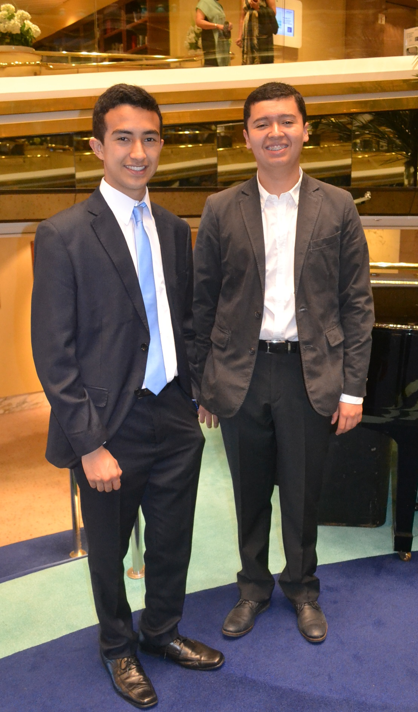
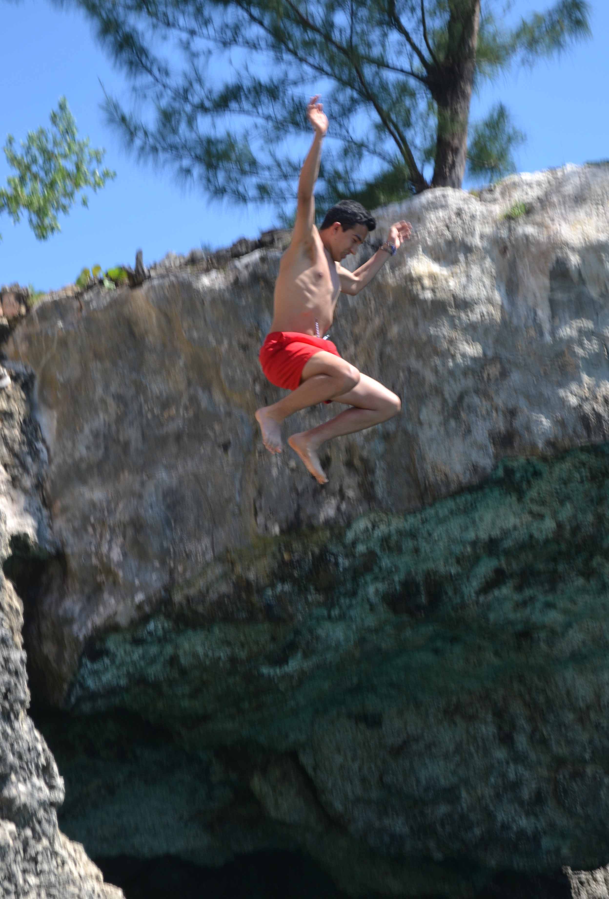
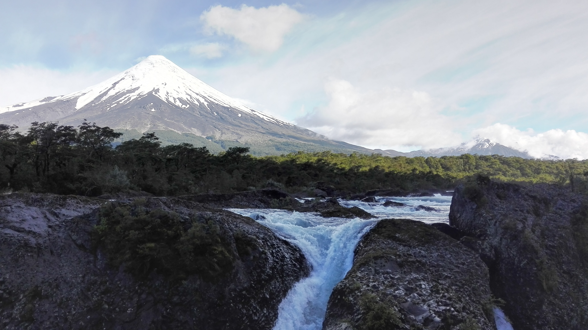

Bienvenidos al blog de Gal
Saludos, camarada.
Este es un fragmento pequeño que me ha regalado el ciberespacio para hablar un poco sobre mí y darme a conocer, en especial porque la cuarenten hace difícil o nulo el contacto con otras personas, así que ¿por qué no aprovechar las ventajas del Internet y poder darles una muestra de lo que soy? Trataré de hacer lo mejor para presentarme de la manera más breve en este sitio web. Primero les hablaré un poco sobre mí. El resto lo encontrarán en las otras partes de este sitio.
Algunos detalles sobre mí
Nací y viví los primeros casi 3 años de mi vida en Arizona, EEUU pero no me considero gringo (ni tengo pinta de gringo). Al llegar a Colombia, estudié en un Jardín Infantil cerca de mi casa hasta que pasé a primaria. En ese momento cambié de colegio al Colombo Americano, donde me gradué. Allí conocí a quienes hoy son de mis mejores amigos hasta hoy. En el colegio siempre que podía, elegía ver Artes Plásticas y por eso me gusta dibujar aunque lo dejé de hacer desde que me gradué, pero me gustaría volver a hacerlo. Participé en varios concursos de dibujo y gané algunos. El más memorable fue un concurso en el que gané un Xbox 360.
En cuanto a los deportes, jamás he hecho parte de alguna selección, pero he practicado varios formalmente. Comencé con Karate y llegué hasta cinturón gris. Lo dejé porque sentía que no avanzaba igual de rápido que antes por culpa del maestro. Aún hoy me siguen interesando las artes marciales y me gustaría retomar Karate o aprender otra nueva. Después de dejar el Karate, un poco después empecé a jugar tennis por un largo tiempo hasta que me esguincé el pulgar izquierdo en un accidente mientras jugaba. Pasaron algunos años después de haber dejado el tennis para haber practicado otro deporte. En este caso fue el boxeo, pero no lo practiqué con mucha regularidad porque tomaba clases sólo en vacaciones. La constante entre estos deportes fue fútbol, pero solo jugaba de lo que sabía, no de una academia.
Mis hobbies son leer, jugar videojuegos, escuchar música y practicar batería. La lectura ha sido un gusto frecuente desde hace mucho. Mi género preferido es la ciencia ficción (igual que en películas y series) aunque también me gustan géneros como suspenso y
policíaco. Mi autor favorito es Isaac Asimov y aún tengo mucho que leer de su obra. Particularmente me gustó su colección de cuentos completos. En cuanto a los videojuegos, también ha sido un pasatiempo desde que tengo memoria. Mi primera consola de videojuegos
fue un PlayStation 1. Mi juego favorito de toda la vida es Halo y es el que mejor desempeño tengo. Disfruto también de otros videojuegos como los juegos de rol (estilo Skyrim, Fable, Fallout, etc), de estrategia (Age of Empires es mi preferido) y shooters.
En cuanto a la música, la historia es algo rara. Inicialmente era una relación amor/odio hasta que descubrí un género y grupo que me gustaron. Durante mucho tiempo mi preferido era Coldplay, con quienes logré apreciar la música. Después de eso, descubrí más y más
bandas de rock (mi género musical favorito con sus derivaciones como el rock progresivo en especial). Ahora mis favoritos son y serán Pink Floyd y Led Zeppelin. Estos encabezan mi top de bandas favoritas. Otros géneros que me gustan y escucho regularmente son metal,
jazz y funk. La parte rara de la historia respecto a la música es que me tardé en apreciarla y por eso también me tardé un poco en querer aprender a tocar un instrumento. Hace pocos años decidí practicar batería y con el tiempo lo he logrado y aún mejoro y busco
estilos nuevos y formas de innovar con el instrumento. Mi mayor inspiración para tocar batería fue por escuchar Led Zeppelin pues el baterista, John Bonham, tenía un estilo que me cautivó desde que lo escuché tocar.
Sobre mi banda...
En un momento de mi vida curiosamente mi mejor amigo y yo quisimos empezar a tocar un instrumento casi al tiempo. Él se inclinó por el bajo y yo la batería: La combinación perfecta. Eso se sumó a que estuve muy en sincronía con él en cuanto a nuestros gustos musicales y la forma de apreciar la música. Hablábamos mucho sobre los mismos grupos y canciones y durábamos horas comentando sobre lo que nos gustaba de la música de esas bandas. Después de un tiempo compartiendo y uniéndonos musicalmente, empezamos a bromear con hacer una banda, porque ya teníamos la inspiración y ya éramos dos instrumentos para un posible grupo. La idea quedó retumbando en nuestras cabezas hasta que un tiempo después, descubrí un lugar donde ensayan bandas. Desde ese momento la idea de hacrr un grupo se empezó a hacer realidad, cuando entre él y yo empezamos a ensayar canciones. La sintonía musical mútua se hizo tangible y cuando logramos ensamblar, decidimos que era hora de completar el grupo con guitarra y voz. Fue ahi cuando contactamos a dos amigos guitarristas quienes se unieron a nosotros y con quienes seguimos trabajando hoy en día. Mucho después, logramos conseguir cantante, después de mucho tiempo sólo haciendo covers instrumentales. Ya llevamos tocando juntos un par de años, al momento sólo tenemos covers pero hay canciones gestándose. Con ánimo de mejorar la noción del grupo, decidimos darle nombre: Ecos de la Cumbre. Tocamos principalmente rock en español y en inglés. Esperamos presentarnos pronto en un bar o algún lugar donde tengamos oportunidad.
Algunos datos curiosos sobre mí
- Instintivamente me pongo música para hacer cualquier actividad en cualquier lugar (obviamente donde sea apropiado o permitido)
- Tengo una anomalía cardíaca.
- Jamás me he fracturado.
- Amo las galletas.
- Tiendo a ser perfeccionista para algunas cosas.
- Sé un poco de alemán y ruso.
- Me gusta saber sobre la Historia humana y particularmente tengo una obsesión rara con la Unión Soviética.
Datos biográficos
| Tabla de información | |
|---|---|
| Nombre completo | Daniel Galindo Ruiz |
| Edad | 19 |
| Fecha de nacimiento | 17 de Septiembre del 2000 |
| Ciudad de nacimiento | Scottsdale, Arizona |
Datos académicos
- Colegio de donde me gradué
- Colegio Colombo Americano (2017)
- Universidad donde estudio
- Universidad de los Andes
- Estudio
- Ingeniería de Sistemas y Computación
- Opción en Física
- Cursos externos
- Introducción al desarrollo de videojuegos 2D en Unity (Universidad de los Andes)
- Front-End Web Development with React (Universidad de Hong Kong)
Mis intereses personales
Algunos de mis videos favoritos
Este video me gusta bastante por la música pero también por la animación y los dibujos que tiene. Lo hizo el artista Felix Colgrave para la canción Source de Fever the Ghost.
El mejor solo de batería para mí, es de John Henry Bonham (Bonzo) de Led Zeppelin. Es parte de la canción Moby Dick y este video es mi versión favorita del solo. Suelo ver mucho este video para aprender de Bonzo, quien es mi ídolo como baterista.
Este es mi video favorito de los pocos que tiene Pink Floyd. Este video fue hecho para la canción High Hopes, del álbum The Division Bell. El material visual del video conecta perfectamente la letra y el sentido de la canción: La nostalgia que evocan recuerdos pasados y los recobecos de la imaginación.
Este video musical de la canción Daydreamming de Radiohead lo adoro por su trabajo de dirección. Tiene técnicas visuales interesantes que alimentan el sentido introspectivo, casi hipnótico de la canción.
Enlaces de interés
Aquí hay algunos de enlaces a sitios web que visito frecuentemente.
- Esta página es para aprender cómo tocar batería, particularmente me intereso por la sección sobre Jazz: Batería de Jazz
- Esta página la uso para saber qué estrellas y planetas hay en el cielo nocturno: Carta estelar
- Aquí los links a las redes sociales de mi banda Ecos de la Cumbre:
- Instagram: @ecosdelacumbre
- Facebook: Ecos de la Cumbre
Algunas fotos melas
Una foto con mi mejor amigo, bajista y cofundador de nuestra banda. Gran persona.
Saltando de un barranco bien alto al mar en Jamaica.
Uno de mis paisajes favoritos, en Chile. Es el volcán Osorno (y los lagos que hay alrededor son algo muuy lindo para apreciar).
Contacto
Le Tour de la Empanada (fuera de la actividad requerida, lo puse para dejarlo listo para después completarlo fuera de este curso)
Este espacio está reservado para un futuro cuando empieze el tour de la empanada...